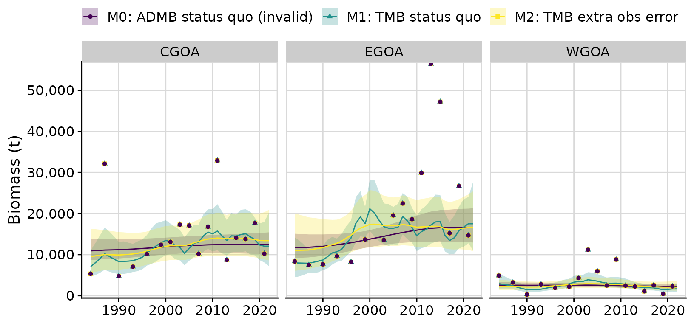

library(rema)
library(ggplot2)
library(dplyr)
library(cowplot) # install.packages('cowplot') # helpful plotting utilities
library(knitr)
ggplot2::theme_set(cowplot::theme_cowplot(font_size = 14) +
cowplot::background_grid() +
cowplot::panel_border())This vignette demonstrates how to fit the REMA model to a biomass
survey and auxiliary CPUE index. We show the transition from the
formerly used ADMB REMA model, which was determined to have invalid
statistical inference due to an error in the specification of the
SEPARABLE_FUNCTION. We fit the correctly-specified version
of the same model using rema and discuss differences in the
results and trade-offs between observation and process error (PE)
variance. Next, we introduce a model that estimates additional
observation error for the biomass and CPUE surveys and compare these
models using Akaike Information Criteria (AIC). Finally, we demonstrate
how rema can be used to compare apportionment results from
alternative models.
This example is based on GOA shortraker rockfish biomass estimates
from the GOA bottom trawl survey and Relative Population Weights (RPWs)
from the NMFS longline survey. The model is stratified by management
area, fitting to data in the eastern GOA (EGOA), central GOA (CGOA), and
western GOA (WGOA). The original model estimates a single, shared PE
parameter across all strata but estimates unique scaling parameters
for each strata. It applies a likelihood weight of 0.5 on the CPUE
survey component of the likelihood. We have replicated this structure in
the TMB model fit using rema.
Model 1: Fit to the biomass and CPUE survey through the estimation of a scaling parameter
# read in the data using the report file from the original ADMB model
admb_re <- read_admb_re(filename = 'goasr_rwout.rep',
biomass_strata_names = c('CGOA', 'EGOA', 'WGOA'),
cpue_strata_names = c('CGOA', 'EGOA', 'WGOA'),
model_name = 'M0: ADMB status quo (invalid)')
input <- prepare_rema_input(model_name = 'M1: TMB status quo',
# fit to both biomass and CPUE survey data
multi_survey = 1,
admb_re = admb_re,
# the RPW index is summable across strata
sum_cpue_index = TRUE,
# likelihood weight
wt_cpue = 0.5,
# one process error parameters (log_PE) estimated
PE_options = list(pointer_PE_biomass = c(1, 1, 1)),
# three scaling parameters (log_q) estimated, indexed as
# follows for each biomass survey stratum:
q_options = list(pointer_biomass_cpue_strata = c(1, 2, 3)))
m1 <- fit_rema(input)
#> Model runtime: 0.1 seconds
#> stats::nlminb thinks the model has converged: mod$opt$convergence == 0
#> Maximum gradient component: 4.12e-04
#> Max gradient parameter: log_PE
#> TMB:sdreport() was performed successfully for this model
output <- tidy_rema(m1)
output$parameter_estimates
#> model_name parameter estimate std_err lci
#> 1 M1: TMB status quo process_error 0.1696964 0.03914612 0.1079729
#> 2 M1: TMB status quo scaling_parameter_q 0.4123880 0.04474590 0.3333857
#> 3 M1: TMB status quo scaling_parameter_q 1.2127809 0.10874662 1.0173198
#> 4 M1: TMB status quo scaling_parameter_q 2.1164194 0.30469400 1.5960887
#> uci
#> 1 0.2667047
#> 2 0.5101115
#> 3 1.4457965
#> 4 2.8063798
plots <- plot_rema(output, biomass_ylab = 'Biomass (t)', cpue_ylab = 'Relative Population Weights')
cowplot::plot_grid(plots$biomass_by_strata,
plots$cpue_by_strata,
ncol = 1)A comparison of the ADMB and TMB models
When we compare the fits between the status quo ADMB model and the identically structured but correctly-specified TMB model, we see large differences in model predictions. In particular the PE variance are very different, with the ADMB model producing a PE that is more than seven times the PE in the TMB model: M0: ADMB status quo (invalid) PE = 0.0233 M1: TMB status quo PE = 0.1697
compare <- compare_rema_models(rema_models = list(m1),
admb_re = admb_re,
biomass_ylab = 'Biomass (t)',
cpue_ylab = 'Relative Population Weights')
compare$plots$biomass_by_strata + theme(legend.position = 'top')Model 2: Estimating additional observation error in the two surveys
The outcome in the TMB model is problematic because we would not expect shortraker rockfish, a notably long-lived species, to exhibit such extreme inter-annual variability. In part, this finding is attributed to relatively low observation error in the survey data. In the following section we explore an alternative model that estimates additional biomass and CPUE survey observation error. We then use AIC to conduct model selection.
input2 <- prepare_rema_input(model_name = 'M2: TMB extra obs error',
# fit to both biomass and CPUE survey data
multi_survey = 1,
admb_re = admb_re,
# the RPW index is summable across strata
sum_cpue_index = TRUE,
# likelihood weight
wt_cpue = 0.5,
# one process error parameters (log_PE) estimated
PE_options = list(pointer_PE_biomass = c(1, 1, 1)),
# three scaling parameters (log_q) estimated, indexed as
# follows for each biomass survey stratum:
q_options = list(pointer_biomass_cpue_strata = c(1, 2, 3)),
# estimate additional obs error on the biomass
# survey (one additional CV shared across all 3
# strata)
extra_biomass_cv = list(assumption = 'extra_cv'),
# estimate additional obs error on the CPUE
# survey (one additional CV shared across all 3
# strata)
extra_cpue_cv = list(assumption = 'extra_cv'))
m2 <- fit_rema(input2)
#> Model runtime: 0.1 seconds
#> stats::nlminb thinks the model has converged: mod$opt$convergence == 0
#> Maximum gradient component: 1.58e-05
#> Max gradient parameter: log_q
#> TMB:sdreport() was performed successfully for this model
out2 <- tidy_rema(m2)The following figure shows the fits to the data as before; however,
here we used the tidy_extra_cv() and
plot_extra_cv() functions to obtain the total 95%
confidence intervals for survey biomass or CPUE observations (i.e.,
fixed + estimated observation error). Note that the 95% confidence
intervals of the observations (i.e.,
obs_lci/obs_uci and
tot_obs_lci/tot_obs_uci in
output$biomass_by_strata and
output$cpue_by_strata are based on the assumption of
normality in log-space; therefore, they are asymmetric on the arithmetic
scale.
In the figure below, the error bars around the survey observations show the 95% confidence intervals based on the assumed design-based estimates (in bold with whiskers) and the 95% confidence intervals based on the total observation error (design-based estimates of CV + additional estimated CV; no whiskers).
# adds new columns with total observation error and 95% confidence intervals to
# the biomass_by_strata and cpue_by_strata
out2 <- tidy_extra_cv(out2)
cvplots <- plot_extra_cv(out2)
cowplot::plot_grid(cvplots$biomass_by_strata,
cvplots$cpue_by_strata,
ncol = 1)Model comparison
A comparison of the the three models shows that estimation of additional observation error substantially reduces PE variance, resulting in a smoother trajectory of biomass predictions.
compare <- compare_rema_models(rema_models = list(m1, m2),
admb_re = admb_re,
biomass_ylab = 'Biomass (t)',
cpue_ylab = 'Relative Population Weights')
compare$plots$biomass_by_strata + theme(legend.position = 'top')
Model selection
Next, we can compare the fits to both biomass and CPUE survey indices
from the alternative TMB models if we remove the admb_re
object from the comparison function as demonstrated below. An
examination of the parameter estimates shows that the M2 (extra
observation error) estimates a much lower PE, approximately 50% of the
M1 PE. Using AIC, we find that M2 has a superior fit to M1 and that
there is statistical support for the additional parameters (note that
this example is intended to be illustrative of the model fitting and
model selection process and is not exhaustive).
compare <- compare_rema_models(rema_models = list(m1, m2),
biomass_ylab = 'Biomass (t)',
cpue_ylab = 'Relative Population Weights')
cowplot::plot_grid(compare$plots$biomass_by_strata + theme(legend.position = 'top'),
compare$plots$cpue_by_strata + theme(legend.position = 'none'),
ncol = 1, rel_widths = c(0.65, 0.35))
kable(compare$output$parameter_estimates)| model_name | parameter | estimate | std_err | lci | uci |
|---|---|---|---|---|---|
| M1: TMB status quo | process_error | 0.1696964 | 0.0391461 | 0.1079729 | 0.2667047 |
| M1: TMB status quo | scaling_parameter_q | 0.4123880 | 0.0447459 | 0.3333857 | 0.5101115 |
| M1: TMB status quo | scaling_parameter_q | 1.2127809 | 0.1087466 | 1.0173198 | 1.4457965 |
| M1: TMB status quo | scaling_parameter_q | 2.1164194 | 0.3046940 | 1.5960887 | 2.8063798 |
| M2: TMB extra obs error | process_error | 0.0811987 | 0.0414474 | 0.0298578 | 0.2208209 |
| M2: TMB extra obs error | scaling_parameter_q | 0.4163631 | 0.0712154 | 0.2977702 | 0.5821878 |
| M2: TMB extra obs error | scaling_parameter_q | 1.1272648 | 0.1861890 | 0.8155188 | 1.5581810 |
| M2: TMB extra obs error | scaling_parameter_q | 2.0421164 | 0.3874923 | 1.4078769 | 2.9620766 |
| M2: TMB extra obs error | extra_biomass_cv | 0.5032289 | 0.1264378 | 0.3075379 | 0.8234411 |
| M2: TMB extra obs error | extra_cpue_cv | 0.2544343 | 0.0612432 | 0.1587408 | 0.4078147 |
kable(compare$aic)| model_name | objective_function | n_parameters | aic | delta_aic |
|---|---|---|---|---|
| M2: TMB extra obs error | 96.36947 | 6 | 204.7 | 0 |
| M1: TMB status quo | 111.37320 | 4 | 230.7 | 26 |
Apportionment results
The proportion of prediction biomass by strata (management area in
this example), is often used for apportionment of Acceptable Biological
Catch estimates. Results from the compare_rema_models()
function include a table of proportioned biomass by management area for
this purpose.
| model_name | year | CGOA | EGOA | WGOA |
|---|---|---|---|---|
| M1: TMB status quo | 2022 | 0.3861332 | 0.5610169 | 0.0528499 |
| M2: TMB extra obs error | 2022 | 0.4124545 | 0.5229923 | 0.0645532 |
# compare$plots$proportion_biomass_by_strata # optional figure